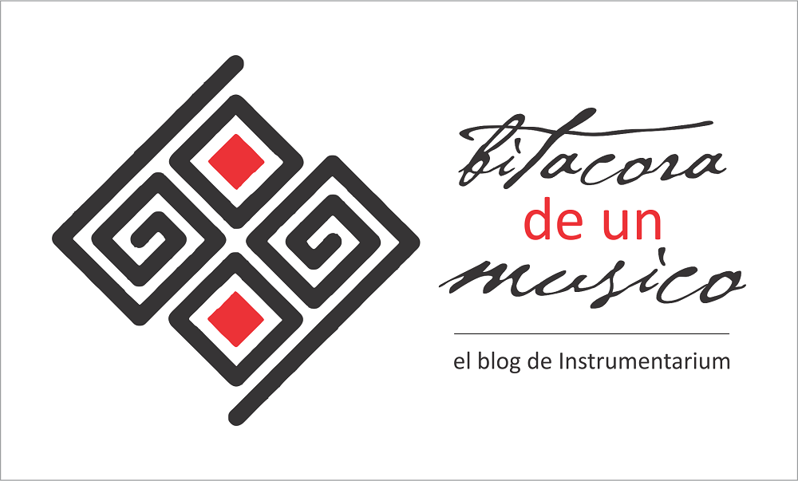

Bitácora de un músico
Inicio > Bitácora de un músico. El blog de Instrumentarium
Las entradas presentadas en este blog incluyen apuntes y notas: productos de investigación que, por su extensión y carácter, no pueden ser publicados en revistas profesionales. A pesar de ello, han sido producidos respetando los mismos criterios de un artículo académico, y para su divulgación o su uso como fuente deben manejarse las mismas reglas de cita.
Periódicamente, estas entradas serán compiladas en series temáticas, publicadas como libros digitales a través del sello El Zorro de Abajo Editora, e incluidas en la sección "Publicaciones".
Las entradas (apuntes y notas) en esta sección están listadas a continuación, siguiendo el orden cronológico de aparición.
Apunte 06. Athanasius Kircher y el canto del loro [ver].
Apunte 05. Tan simples, tan complejas [ver].
Apunte 04. La magia de los bullroarers [ver].
Apunte 03. El origen de los clarinetes sudamericanos [ver].
Apunte 02. El arrabel de Orellana [ver].
Apunte 01. Ojos que suenan como sonajas [ver].
Nota 07. Kamacheña: Una flauta andina de una mano [ver].
Nota 06. La bocina sananáx de los Chiquitano [ver].
Nota 05. La flauta tyopïx de los Chiquitano [ver].
Nota 04. La flauta yoresoma de los Chiquitano [ver].
Nota 03. La flauta yoresóx de los Chiquitano [ver].
Nota 02. La flauta natïraixh de los Chiquitano [ver].
Nota 01. La flauta buxíxh de los Chiquitano [ver].